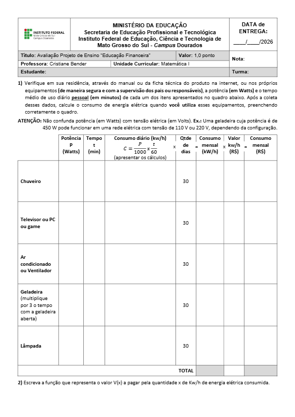

A tabela foi desenvolvida na matéria de matemática pela professora Cristiane Bender

A tabela teve como finalidade conscientizar os estudantes sobre seu consumo diário e mensal de energia, ensinando-os a calcular os valor do sua parte na contribuição do valor da energia paga em suas residências
Volte a página inicial